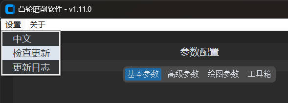
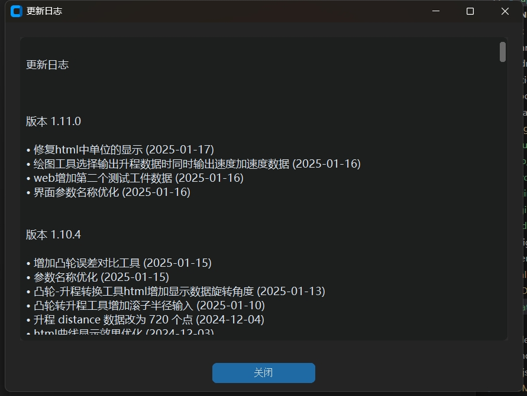

软件升级
Cam Grinding 会定期发布更新，确保用户可以使用最新的功能和性能改进。
检查更新
- 启动软件后，点击菜单栏的
设置>检查更新按钮。 - 软件将自动检查是否有可用的更新版本。
如果检测到新版本，按照提示完成下载与安装。

查看更新日志
- 点击菜单栏的
设置>更新日志按钮。 在更新日志窗口中，查看每个版本的更新内容，包括新功能、优化项和已修复的问题。

通过以上步骤，您可以轻松获取软件的最新版本，体验更丰富的功能和更流畅的操作。如在升级过程中遇到问题，请参考故障排除章节或联系技术支持。